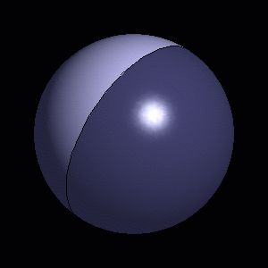
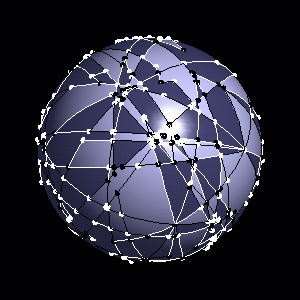

|
CGAL 4.13 - 2D Boolean Operations on Nef Polygons Embedded on the Sphere
|
|
CGAL 4.13 - 2D Boolean Operations on Nef Polygons Embedded on the Sphere
|
Nef polyhedra are defined as a subset of the d-dimensional space obtained by a finite number of set complement and set intersection operations on halfspaces.
Due to the fact that all other binary set operations like union, difference and symmetric difference can be reduced to intersection and complement calculations, Nef polyhedra are also closed under those operations. Also, Nef polyhedra are closed under topological unary set operations. Given a Nef polyhedron one can determine its interior, its boundary, and its closure.

|

|
Additionally, a d-dimensional Nef polyhedron has the property, that its boundary is a (d-1)-dimensional Nef polyhedron. This property can be used as a way to represent 3-dimensional Nef polyhedra by means of planar Nef polyhedra. This is done by intersecting the neighborhood of a vertex in a 3D Nef polyhedron with an \( \epsilon\)-sphere. The result is a planar Nef polyhedron embedded on the sphere.
The intersection of a halfspace going through the center of the \( \epsilon\)-sphere, with the \( \epsilon\)-sphere, results in a halfsphere which is bounded by a great circle. A binary operation of two halfspheres cuts the great circles into great arcs.
The incidence structure of planar Nef polyhedra can be reused. The items are denoted as svertex, shalfedge and sface, analogous to their counterparts in Nef_polyhedron_S2. Additionally, there is the shalfloop representing the great circles. The incidences are illustrated in the figure above.
We introduce geometric objects that are part of the spherical surface \( S_2\) and operations on them. We define types Nef_polyhedron_S2::Sphere_point, Nef_polyhedron_S2::Sphere_circle, Nef_polyhedron_S2::Sphere_segment, and Nef_polyhedron_S2::Sphere_direction. Nef_polyhedron_S2::Sphere_points are points on \( S_2\), Nef_polyhedron_S2::Sphere_circles are oriented great circles of \( S_2\), Nef_polyhedron_S2::Sphere_segments are oriented parts of Nef_polyhedron_S2::Sphere_circle bounded by a pair of Nef_polyhedron_S2::Sphere_points, and Nef_polyhedron_S2::Sphere_directions are directions that are part of great circles. (a direction is usually defined to be a vector without length, that floats around in its underlying space and can be used to specify a movement at any point of the underlying space; in our case we use directions only at points that are part of the great circle that underlies also the direction.)
Note that we have to consider special geometric properties of the objects. For example two points that are part of a great circle define two Sphere_segments, and two arbitrary Sphere_segments can intersect in two points.
If we restrict our geometric objects to a so-called perfect hemisphere of \( S_2\)A perfect hemisphere of \( S_2\) is an open half-sphere plus an open half-circle in the boundary of the open half-sphere plus one endpoint of the half-circle. then the restricted objects behave like in classical geometry, e.g., two points define exactly one segment, two segments intersect in at most one interior point (non-degenerately), or three non-cocircular sphere points can be qualified as being positively or negatively oriented.
In this first example Nef_polyhedron_S2 is parametrized with a CGAL Kernel as traits class. The types comprising the spherical geometry can be retrieved from the type Nef_polyhedron_S2<Traits> as is done in the example with the type Nef_polyhedron_S2::Sphere_circle. Then three Nef polyhedra are created: \( N1\) is a halfsphere including the boundary, \( N2\) is another halfsphere without the boundary, and \( N3\) is the intersection of \( N1\) and \( N2\).
Th example shows the different types of constructors: \( N1\) is the complete sphere, \( N2\) is a halfsphere which includes the boundary, \( N3\) is created with the copy constructor, \( N4\) is created as an arrangement of a set of Nef_polyhedron_S2::Sphere_segments, and \( N5\) is created as the empty set.
The example also shows the use of unary set operations, binary operations, and binary predicates: \( N3\) is defined as the complement of \( N2\), \( N1\) is compared with the union of \( N2\) and \( N3\), \( N5\) is united with \( N2\) and then intersected with \( N4\). At last, it is tested if \( N5\) is a subset of \( N2\) and if \( N5\) is not equal to \( N4\).
File Nef_S2/nef_s2_construction.cpp
By recursively composing binary and unary operations one can end with a very complex rectilinear structure. Nef_polyhedron_S2 allows read-only exploration of the structure.
In the following example, a random Nef_polyhedron_S2 S created from n halfspheres is explored. Each sface is composed of one outer sface cycles and an arbitrary number of inner sfaces cycles. The outer cycle is either an shalfloop or a cycle of shalfedges. An inner cycles additionally can be an isolated vertex. The example shows how to get the entry item it to all sface cycles of an sface sf and how to find out what type of item it is.
The macro CGAL_forall_sface_cycles_of is equivalent to a for-loop on the range [sf->sface_cycles_begin(), sf->sface_cycles_end()). An Nef_polyhedron_S2::SFace_cycle_const_iterator either represents a Nef_polyhedron_S2::SVertex_const_handle, a Nef_polyhedron_S2::SHalfedge_const_handle or a Nef_polyhedron_S2::SHalfloop_const_handle. In order to find out which handle type is represented, the functions Nef_polyhedron_S2::is_svertex(), Nef_polyhedron_S2::is_shalfedge() and Nef_polyhedron_S2::is_shalfloop() are provided. Afterwards the iterator can be casted to the proper handle type.
File Nef_S2/nef_s2_exploration.cpp
Using the locate function, it is possible to retrive an item at a certain location on the sphere. In the following example, the item at location Sphere_point(1,0,0) in a random Nef_polyhedron_S2 is retrieved. locate returns an instance of type Nef_polyhedron_S2::Object_handle, which is a container for any handle type. Here, it either a Nef_polyhedron_S2::SVertex_const_handle, a Nef_polyhedron_S2::SHalfedge_const_handle, a Nef_polyhedron_S2::SHafloop_const_handle or a Nef_polyhedron_S2::SFace_const_handle. The function assign() performs the cast operation and returns a Boolean which indicates whether the cast was successful or not.
File Nef_S2/nef_s2_point_location.cpp
 1.8.13
1.8.13